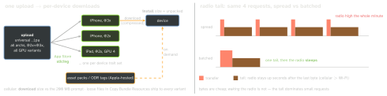

ios-platform · folio
In one line: Size: the App Store slices one universal upload into per-device variants, asset packs move optional content out of the download, bitcode is gone. Energy: do less work, less often, in bigger batches, woken by events not timers, at the lowest fidelity the user accepts — the radio tail, GPS and wakeups cost more than bytes.
Download PDF Print view LaTeX source


App size
- Slicing — a variant per device: arch + asset-catalog traits (scale, idiom, Metal GPU family, memory class). Only asset catalogs slice.
- Bitcode — deprecated in Xcode 14; the App Store no longer takes it.
- Three sizes — upload (universal) · download (compressed variant; the cellular prompt checks it) · install (unpacked). Over cellular iOS asks above 200 MB (iOS 13+; user-adjustable in Settings).
- ODR (iOS 9, deprecated in iOS 27: “Use Background Assets”) — tagged resources hosted by the App Store: initial install, prefetched, on demand.
NSBundleResourceRequest(tags:)+beginAccessingResources; the live request pins them — afterendAccessingResources/deinit they are purgeable. - Background Assets (iOS 16) — asset packs, Apple-hosted (App Store Connect) or self-hosted (
BAURLDownload); policies essential (before first launch) · prefetch · on-demand;AssetPackManager. - Measure — Organizer export, App Thinning: all variants →
App Thinning Size Report.txt(per variant, compressed + not); App Store Connect file sizes;assetutilonAssets.car. - Shrink — catalog assets (HEIC, vectors), drop unused images/locales;
-Osize, dead-code stripping, symbols in the dSYM, fewer dylibs.
Energy — what drains
- Radio tail (diagram) — every wake of cellular/Wi-Fi pays seconds of high power. Polling every 10 s = the radio never sleeps; push (APNs rides one shared system connection) = the OS pays.
- CPU wakeups — timers, polling loops, chatty background work stop deep idle.
timer.tolerance≥ 10% lets iOS coalesce. Off-main ≠ cheaper: same joules. - GPS — continuous
kCLLocationAccuracyBestis among the worst. Least accuracy you need,distanceFilter, one-shotrequestLocation(), significant-change (∼500 m, ≥ 5 min) or region monitoring, stop when the screen closes. “When In Use” can still drain: mode + accuracy decide, not the permission. - Display + GPU —
isIdleTimerDisabledleft on, needless 120 Hz animation, offscreen passes.
Energy — what to do
- Batch — buffer analytics, prefetch in one burst, flush on Wi-Fi/charging.
isDiscretionary = true: iOS picks the moment (automatic for transfers started in the background). Respect Low Data Mode (allowsConstrainedNetworkAccess). - Low Power Mode — pause prefetch, autoplay, decoration; never break what the user just asked for. Read
ProcessInfo.processInfo.isLowPowerModeEnabled, observeNSProcessInfoPowerStateDidChange. - Thermal —
thermalState.nominal/.fair/.serious/.critical: at.seriouscut frame rate, quality, effects. - Measure — Xcode Energy Impact gauge; Instruments Energy
Log (on device); field: MetricKit (iOS 13)
MXMetricPayload∼daily —cpuMetrics,locationActivityMetrics,networkTransferMetrics,cellularConditionMetrics,MXCPUExceptionDiagnostic; Organizer → Energy.
Example
let req = NSBundleResourceRequest(tags: ["level-3"])
req.beginAccessingResources { error in // keep `req` alive
if let error { return showRetry(error) }
loadLevel3() } // later: req.endAccessingResources()
let cfg = URLSessionConfiguration
.background(withIdentifier: "sync")
cfg.isDiscretionary = true // iOS picks the moment
cfg.allowsExpensiveNetworkAccess = false // no cellular
let pi = ProcessInfo.processInfo
if pi.isLowPowerModeEnabled
|| [.serious, .critical].contains(pi.thermalState) {
prefetcher.pause() } // shed optional workLimits (iOS, App Store Connect)
| before iOS 18 | iOS 18+ | |
|---|---|---|
| app bundle | 2 GB | 4 GB |
| one asset pack | 512 MB | 8 GB |
| initial install + prefetched | 4 GB | no limit |
| in use at once | 2 GB | no limit |
| hosted in total (max 1000 packs) | 20 GB | 70 GB |
Traps
- “Enable bitcode for thinning” — removed; slicing + asset packs remain.
- ODR read by path without a live request — never downloaded, or purged. Packs move when bytes arrive: loading UI, retry, offline.
- “One small request can’t matter” — tail energy. Batch it.